高数总结
1 基础知识
- 反函数可以是多值函数
- 任意定义域对称的函数，都可以用一个奇函数和一个偶函数表示
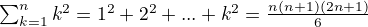
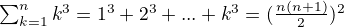
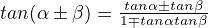
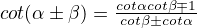
- 万能公式
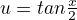
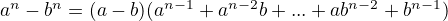
2 极限与连续
- k 阶无穷小：
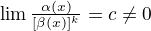
- 并不是所有无穷小都可以比阶的
- 常用等价无穷小：
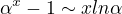
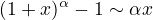
- 洛必达法则使用条件：
- 原函数极限为“
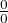
”或“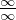
”时，可以使用洛必达法则 - 如果右边（原函数的导数）存在或者无穷大
- 右存在则左存在，而右不存在无法推出左也不存在，需要换方法解决
- 原函数极限为“
- 由导数
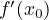
的值的情况，不能推断出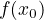
在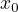
处的变化形态（未告知）是否连续，但可以由导数的定义进行分析 - 对和式进行缩放，如果有n项，那么n未主要因素，如果由有限项，那么观察最大值和最小值
- 等价无穷小替换，乘积可以，但是加减不可以
- 泰勒公式：
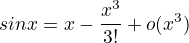
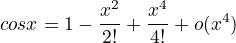
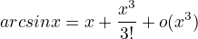
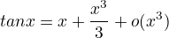
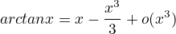
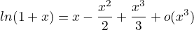
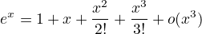
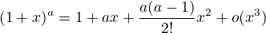
- 只有 limA，limB 存在，才有：
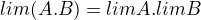
.否则，要么做整体运算，要么极限不存在
3 一元函数微分
- 对于一元函数，可微与可导等价
- 可导的函数不一定光滑（连续）
- 幂指函数求导，化为指数函数
- 符合函数求导法则中，
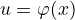
在点处可导，函数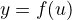
在点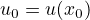
处可导，是符合函数可导的充分条件，而非必要条件，前面推后面 - 求高阶导数，利用已有泰勒公式展开；或者先导后积或先积后导，在利用已有公式
- 极值的充分条件：首先
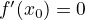
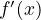
在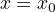
处左右异号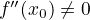
- 偶数次高阶导数为0
- 凹凸性的其他定义： 满足
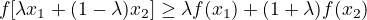
的函数为凸函数
4 中值定理
- 零点定理 边界值互为反数，必有一点为0
- 费马定理 可导、取极值，则导数为0
- 罗尔定理 闭区间连续，开区间可导，端点值相等，必有一点导数为0
- 拉格朗日中值定理 闭区间连续，开区间可导，导数与边界值有关
- 柯西中值定理 两个函数的拉格朗日中值定理
- 技巧 题目中出现几级导数，就使用几级的介值定理
- 技巧
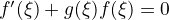
构造辅助函数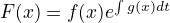
- 技巧 涉及高阶导数，考虑使用泰勒公式
- 技巧 没有思路时，考虑使用泰勒公式
- 技巧 同阶导数相减，考虑导数定义
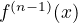
最多只有一个实零点，那么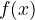
最多只有n个不同的零点- 实系数奇次多项式至少有一个实零点
- 多项式有r重根的必要条件是：前r阶导数都为0
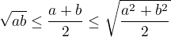
5 一元函数积分
- 原函数（不定积分）存在定理：连续函数必有原函数；含有第一类间断点、无穷间断点的函数必无原函数；含有震荡间断点的可能有原函数
- 定积分存在的必要条件：积分区间有限；被积函数有界
- 积分收敛并不能推出无穷大的极限为0
- 把和使得函数无意义的点（瑕点）统称为积点
- 分部积分方法的推广方法（不容易出错）： 斯托柯克公式
- 有理函数的积分：
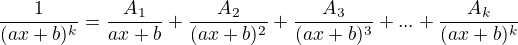
- 常见积分：
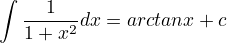
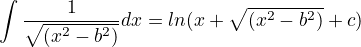
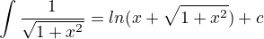
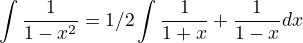
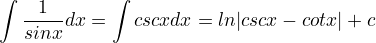
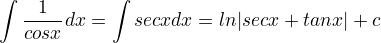
- 定积分表达函数的平均值：
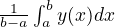
- 技巧：利用导数为0，确定函数的值为定值
- 定积分计算平面图形的面积：
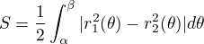
- 曲率公式：
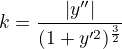
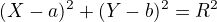
，其中：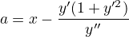
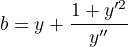
- 抽水做功：
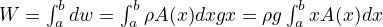
- 旋转曲面的面积：
- 傅里叶级数
- 周期函数可以由一个序列的正弦型函数叠加得到
- 函数的区间在，，其中，，，
- x 为连续点，；x 为间断点，；，
- 推广到任意区间，使用变换，分别计算系数
{kind=link}
6 多元函数微分
- 连续性
- 偏导是否存在 使用定义证明
- 偏导是否连续 使用定义求的偏导是否和公式求的偏导值相同
- 是否可微
- 隐函数存在定理： , 不为0
7 立体几何
- 数量积为0，垂直
- 向量积为0，平行
- 三向量共面，组成的行列式秩为0
- 平面束方程：，使用时需要验证第二个平面是否满足条件
8 二重、三重、特殊积分
- 二重积分的几何背景是曲顶柱体的体积
- 三重积分的几何背景是空间物体的质量
- 三重积分存在的条件（可积性）：连续；有界且有有限个点或线之外都是连续的
- 三重积分的计算方法：
- 直角坐标系下对体积积分
- 柱面坐标系下积分
- 球面坐标系下积分
- 技巧 对称性，对称，
 奇函数，为0
奇函数，为0 - 第一型曲线积分的几何背景是空间曲线的质量
- 计算时候可以将曲线带入
- 第一型曲线积分计算时候都是化为一元定积分
- 基本计算方法：化为参数式计算
- 二维第一型曲线积分的其他计算方法：
- 第一型曲面积分的几何背景是空间曲面的质量
- 计算时可以将曲面方程代入
- 第一型曲面积分计算时候都是化作二元定积分
- 基本计算方法：
- 投影不能重合
- 几何意义计算：
- 重心
- 转动惯量
- 引力
- 第二型曲线积分的几何背景是变力沿曲线做功等于变力在不同方向上的分力分别做功
- 参数方程法，化为一元定积分
- 格林公式法
- 化为二重积分
- 闭合曲线，曲线上无没有定义的点；左手在L围成的D内为正
- 平面上曲线积分与积分区域无关
- 普通区域内（非单连通区域）， 与积分区域无关
- 单连通区域， 与积分区域无关
- 闭合区域与曲线积分要区分
- 第二型曲面积分的几何背景是穿过曲面的向量场的通量
- 特殊的对称性 曲面积分内的函数为偶函数时，通量为0（联系向量场通量的物理意义）
- 基础性计算方法 投影法
- 物理意义 向量场穿过平面的通量 = 向量场在 xy 平面上的分量穿过的通量
- 可以将曲面方程代入计算
- 方向为上侧取正
- 投影不能重合
- 高斯公式
- 第一型曲面积分和第二型曲面积分之间的关系
- 空间第二型曲线积分计算 斯托克斯公式 –图片–
- 梯度
- 散度
- 旋度
9 级数
- 级数收敛 => 无穷大极限为0，不能反推
- 正向级数判别方法：
- 比较判别 两个正向级数，大的收敛则小的也收敛；小的发散则大的也发散
- 比值判别 ，小于1时收敛
- 根植判别 ，小于1时收敛
- 交错级数判别 单调不增 无穷大处趋于0
- 阿贝尔定理（幂级数收敛半径）
- 收敛区间是开区间，收敛域有可能时闭区间
- 求导或者积分后，收敛半径不变，收敛域可能减小或变大
- 常见幂级数展开式：
-
- 正向级数只谈收敛与发散，没有绝对收敛与条件收敛之分
10 常微分方程
- 一阶线性微分方程求解 形如的方程，
- 伯努利方程 形如的方程，化为上个方程的形式
- 二阶常系数齐次线性微分方程，形如
- 二阶常系数非齐次线性微分方程特解 –图片–
11 TODO 需要查资料
- 等价无穷小可以替换的条件
- 平面上曲线积分与积分区域无关